Jenkins+Docker持续集成
本节内容：
- Jenkins介绍
- 安装部署Jenkins
- Jenkins构建maven风格的job
- Jenkins邮件通知设置
- Sonar
- Jenkins与Docker结合
一、Jenkins介绍
Jenkins是一个开源软件项目，是基于Java开发的一种持续集成工具，用于监控持续重复的工作，旨在提供一个开放易用的软件平台，使软件的持续集成变成可能。
二、安装部署Jenkins
下载地址：https://jenkins.io/download/
我这里下载war包安装，版本：1.642.3 LTS .war
1. 环境信息
| 主机名 | 操作系统版本 | IP地址 | 安装软件 |
| osb30 | Redhat 6.5 | 172.16.206.30 | jenkins |
2. 新建Jenkins用户
1 2 3 4 5 | [root@osb30 ~]# groupadd jenkins[root@osb30 ~]# useradd -g jenkins jenkins[root@osb30 ~]# id jenkinsuid=501(jenkins) gid=501(jenkins) groups=501(jenkins)[root@osb30 ~]# echo "wisedu" | passwd --stdin jenkins &> /dev/null |
3. Jenkins安装方式
安装jenkins有两种方式，tomcat方式部署和java部署启动。本次实验我以tomcat下部署启动为例。
（1）tomcat方式部署
a.首先安装tomcat和JAVA，配置环境变量（此步骤不再讲述，java配置不可缺少）
我这里安装的是jdk 1.8.0_65。
b.将从官网下载下来的jenkins.war文件放入tomcat下的webapps目录下，进入tomcat的/bin目录下，启动tomcat即启动jenkins。
我这里用的是tomcat8。
c.启动jenkins时，会自动在webapps目录下建立jenkins目录，访问地址为：http://localhost:8080/jenkins
1 2 3 4 5 | [jenkins@osb30 ~]$ tar zxf apache-tomcat-8.0.30.tar.gz[jenkins@osb30 ~]$ mv jenkins.war apache-tomcat-8.0.30/webapps/[jenkins@osb30 ~]$ cd apache-tomcat-8.0.30[jenkins@osb30 apache-tomcat-8.0.30]$ bin/startup.shJenkins home directory: /home/jenkins/.jenkins found at: $user.home/.jenkins |
如果启动时报错：
1 | Caused by:java.awt.AWTError: Can't connect to X11 window server using ':0' as the value of the DISPLAY varible... |
解决：
1 2 3 | [jenkins@osb30 ~]$ cd apache-tomcat-8.0.30/bin/[jenkins@osb30 bin]$ vim catalina.sh JAVA_OPTS="-Xms1024m -Xmx1024m -Djava.awt.headless=true" |
d.访问jenkins
http://172.16.206.30:8080/jenkins
（2）java部署启动jenkins
切换到jenkins.war存放的目录，输入如下命令：
1 | $ java -jar jenkins.war |
可以修改启动端口
1 | $ java -jar jenkins.war --httpPort=8000 |
然后在浏览器中（推荐用火狐、chrom）输入http://localhost:8080，localhost可以是本机的ip，也可以是计算机名。就可以打开jenkins；修改端口后，访问地址的端口需同步变更。
4. Jenkins授权和访问控制
默认地Jenkins不包含任何的安全检查，任何人可以修改Jenkins设置，job和启动build等。显然地在大规模的公司需要多个部门一起协调工作的时候，没有任何安全检查会带来很多的问题。 我们可以通过下面的方式来增强Jenkins的安全：
访问jenkins：http://172.16.206.30:8080/jenkins
点击系统管理—> Configure Global Security，点击”启用安全”，可以看到可以使用多种方式来增强Jenkins的授权和访问控制：

查看策略：
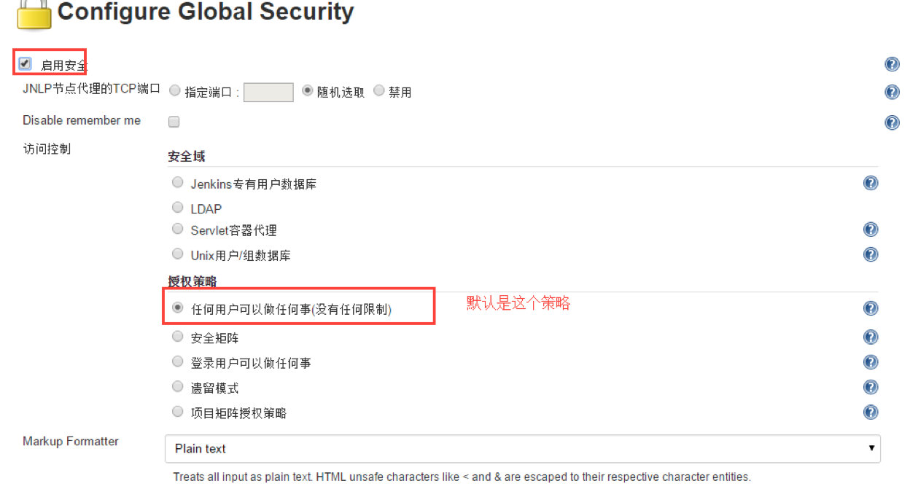
如上图所示，默认是”任何用户可以做任何事情(没有任何限制)”。
我们在”安全域”选择”Jenkins专有用户数据库”，”允许用户注册”；并先在“授权策略”点击“任何用户可以做任何事情(没有任何限制)”， 防止注册之后无法再管理jenkins。此时就可以刷新一下jenkins的页面看到右上角有登录、注册的按钮。
（1）注册管理员账号
a.点击注册，首先注册一个管理员账号。
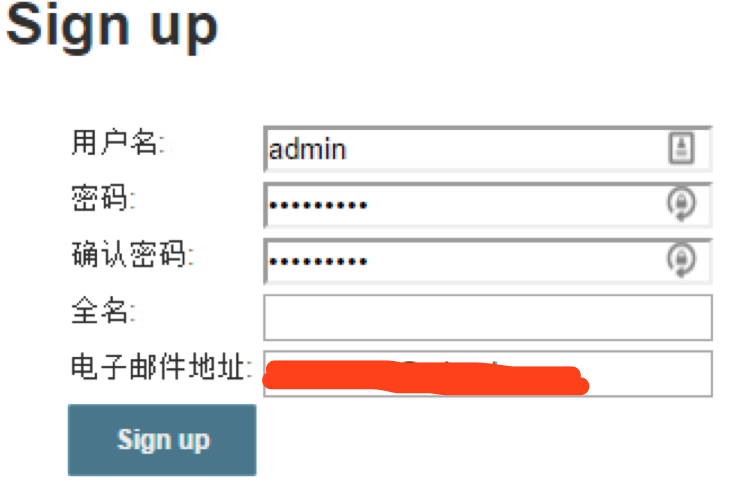
b.点击系统管理—> Configure Global Security，在“授权策略”选择”安全矩阵”，添加用户/组——添加admin账户——为admin账户添加所有权限，为匿名用户勾选你希望对方了解的功能。
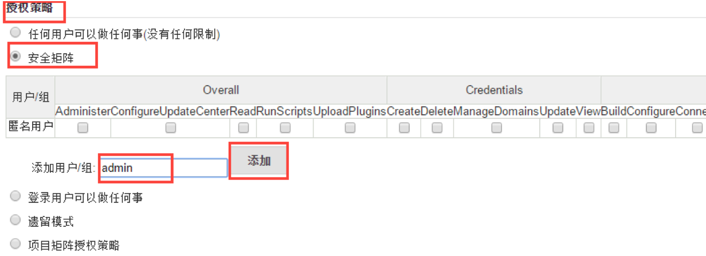
【注意】：匿名用户一定要开启此处的可读权限，若不开启，后面github或者bitbucket的webhook自动构建会没有权限。
并且勾选上该项，点击保存。
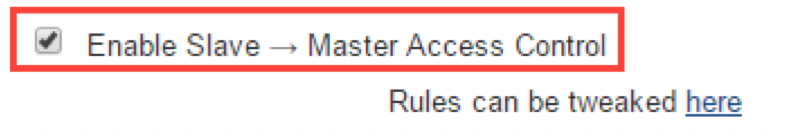
做完此部操作之后，即可用admin帐号登录，取消登录用户可以做任何事的权限。
以上操作，即可完成jenkins的授权和访问控制。
5. Jenkins系统配置
登录jenkins——系统管理——系统设置，为jenkins添加上需要的功能配置，有如下几个方面：
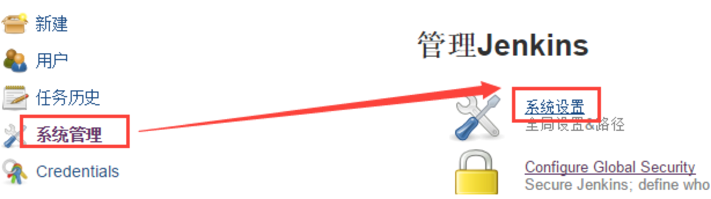
（1）JDK配置
在jdk的选项，点击”新增JDK”，取消自动安装，输入jdk别名（名称随意），JAVA_HOME大家应该都很了解，在此处填写jenkins所在服务器安装的java程序的HOME位置即可，根据不同操作系统填写不同路径，如win7 D:\Java\jdk1.8 linux /usr/lib/jvm/jdk1.7.0_51。
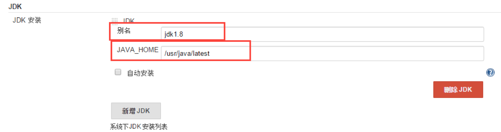
设置完了请记得保存。
（2）git/svn版本控制添加
根据使用的版本选择控制版本的应用程序的路径，如jdk配置即可。
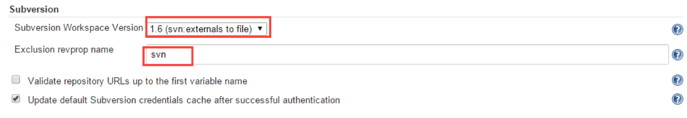
【注意】:如果使用Git作为版本控制库，Jenkins默认情况下是没有安装Git的。我们需要到插件管理界面中选中Git，然后点击直接安装。
点击系统管理—>管理插件—>可选插件，在右上角”过滤”处输入git进行搜索：
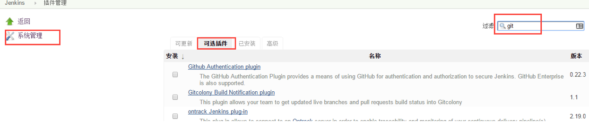
找到Git client plugin和Git plugin，在前面打上√，点击直接安装。
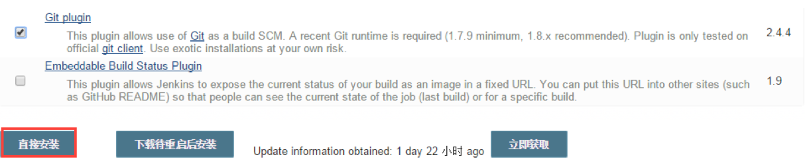
安装插件中。。。
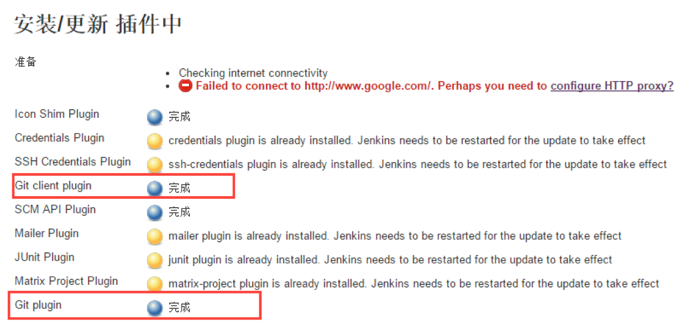
安装成功后，重启jenkins。
1 2 3 | [jenkins@osb30 ~]$ cd apache-tomcat-8.0.30[jenkins@osb30 apache-tomcat-8.0.30]$ bin/shutdown.sh[jenkins@osb30 apache-tomcat-8.0.30]$ bin/startup.sh ;tail -f logs/catalina.out |
（3）Jenkins添加maven配置
先判断jenkins所在主机是否安装了maven：
1 2 | # mvn –version-bash: mvn: command not found |
如果没有安装，请先安装maven。
a.CentOS 安装maven
1 2 3 4 5 6 7 8 9 10 11 12 13 14 15 16 17 18 | [root@osb30 ~]# cd /usr/local/[root@osb30 local]# wget http://apache.opencas.org/maven/maven-3/3.3.9/binaries/apache-maven-3.3.9-bin.tar.gz[root@osb30 local]# tar zxf apache-maven-3.3.9-bin.tar.gz[root@osb30 local]# ln -s apache-maven-3.3.9 maven[root@osb30 local]# vim /etc/profile# 添加如下配置：# Maven configuration.MAVEN_HOME=/usr/local/mavenexport PATH=$MAVEN_HOME/bin:$PATH[root@osb30 local]# source /etc/profile[root@osb30 local]# mvn -versionApache Maven 3.3.9 (bb52d8502b132ec0a5a3f4c09453c07478323dc5; 2015-11-11T00:41:47+08:00)Maven home: /usr/local/mavenJava version: 1.8.0_65, vendor: Oracle CorporationDefault locale: en_US, platform encoding: UTF-8OS name: "linux", version: "2.6.32-431.el6.x86_64", arch: "amd64", family: "unix" |
b.Jenkins配置maven
安装完成后，登录jenkins。点击系统管理—>系统设置。
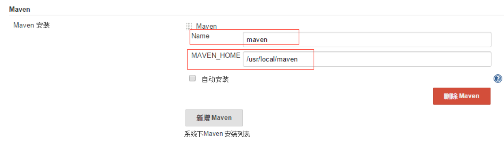
三、Jenkins构建maven风格的job
1. 新建maven任务
登录jenkins，点击新建。输入Item名称，选择“构建一个maven项目”，点击OK。
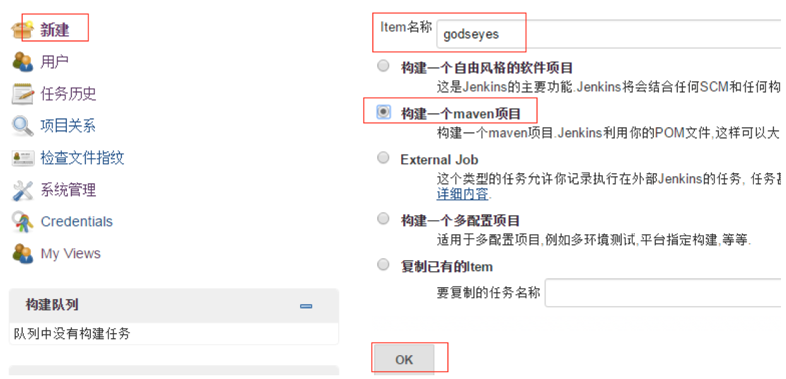
2. 构建任务配置
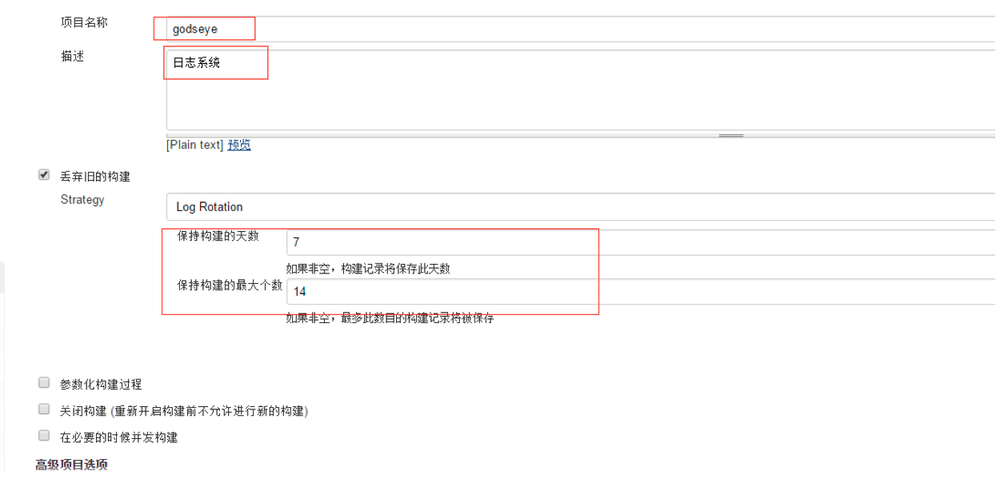
3. 源码管理配置
进入配置页面，找到”源码管理”。我这里是svn，输入项目所在版本库的地址。
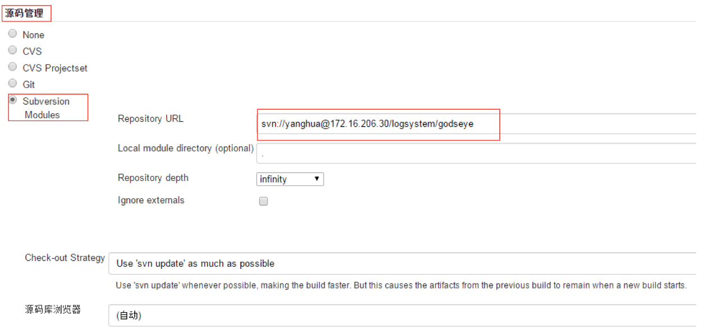
4. 构建触发器配置
在”源码管理”下面是”构建触发器”。
”构建触发器”是一个持续集成的触发器插件，可以根据已经完成构建的结果，触发新Job或者传递参数。默认的选项是Build whenever a SNAPSHOT dependency is built，意思是依赖于快照的构建，意思是依赖于快照的构建，当代码有更新时就构建项目。
Build periodically和Poll SCM可以设置定时自动构建。两者区别如下：
- Poll SCM：定时检查源码变更（根据SCM软件的版本号），如果有更新就checkout最新code下来，然后执行构建动作。
- Build periodically：定时进行项目构建（它不care源码是否发生变化）。
我这里设置为每12小时构建一次。
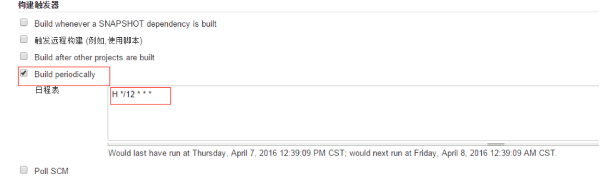
5. Maven构建设置
（1）Pre Step
Pre Steps选项用来配置构建前的工作，这里不作更改。
（2）配置Root POM和Goals and options
因为是Maven项目，所以Build选项有Root POM和Goals and options的设置。Root POM:填写你项目的pom.xml文件的位置，注意：是相对位置，如果该文件不存在，会有红色字提示。
比如我这里是：
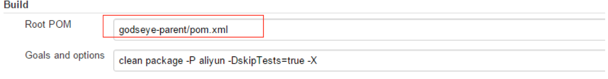
（3）Post Steps
在maven项目创建完成后，我们还需要实现每次构建完成，将war发布到阿里云主机上，以实现自动发布。我们通过添加shell实现自动发布。
找到Post steps下有个Execute shell：
【注意】:Jenkins在执行该shell脚本的时候是以jenkins这个用户身份去执行。某些场景下请注意环境变量PATH。
将构建完成后，所要采取的动作，shell脚本脚本内容如下：
配置阿里云主机信任内网的这台jenkins主机：
由于是war包在内网服务器上，发布的环境是在阿里云主机上，所以要配置主机互信，防止scp war包时还需要输入密码。我这里内网服务器ip是172.16.206.30，外网是114.55.29.246。
1 2 | [jenkins@osb30 ~]$ ssh-keygen -t rsa -f .ssh/id_rsa[jenkins@osb30 ~]$ ssh-copy-id -i .ssh/id_rsa.pub root@114.55.29.246 |
四、Jenkins邮件通知设置
1. 配置jenkins自带的邮件功能
（1）找到系统设置
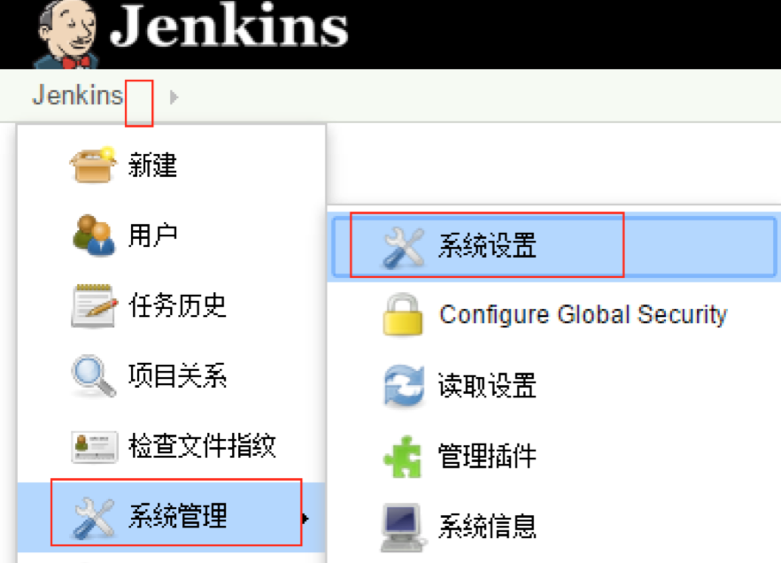
（2）填写系统管理员邮箱
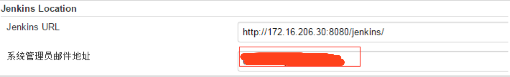
【注意】：这个系统管理员邮件地址一定要填写，否则邮件发不出去，连下面的测试邮件都发不出去。
（3）找到邮件通知，输入SMTP服务器地址，点击高级，输入发件人帐号和密码
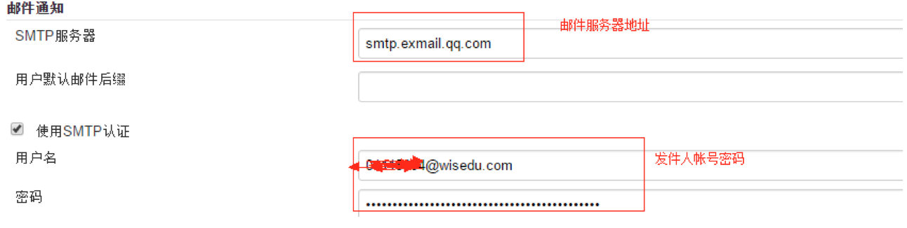
（4）勾选上”通过发送测试邮件测试配置”，然后输入收件人帐号
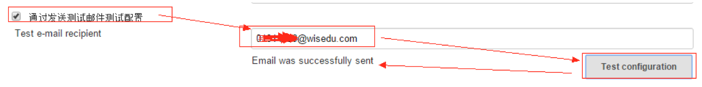
此时我们已经可以发送邮件了。在具体job配置处，找到”构建设置”，输入收件人信箱，但是你会发现只能在构建失败时发邮件。可以安装插件Email Extension Plugin来自定义。
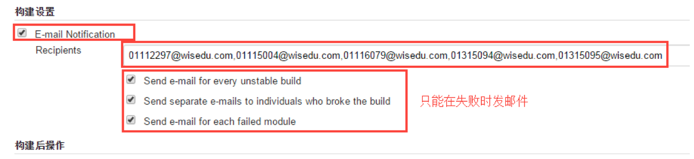
2. 安装使用插件Email Extension Plugin
（1）安装插件Email Extension Plugin
该插件支持jenkins 1.5以上的版本。
在系统管理-插件管理-安装Email Extension Plugin。它可根据构建的结果，发送构建报告。该插件支持jenkins 1.5以上的版本。
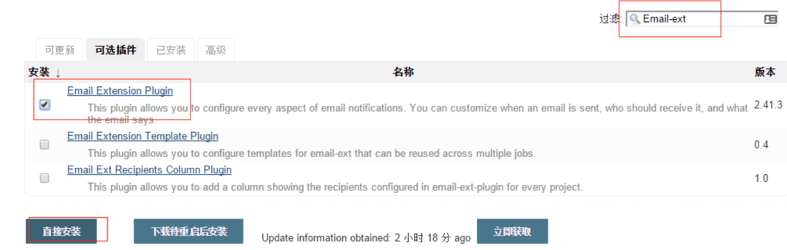
【注意】:安装完如果使用Email Extension Plugin，就可以弃用自带的那个邮件功能了。
（2）配置使用插件Email Extension Plugin
点击”系统配置”—>”系统设置”。
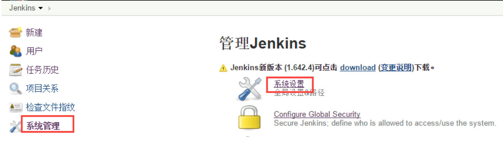
找到Extended E-mail Notification处，输入如下的配置：
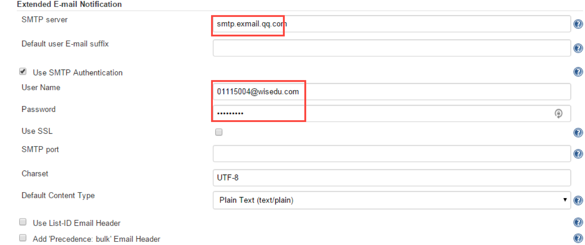
【注意】：上面的User Name和Password需要点开“高级设置”后才能看到，必须输入用户名和密码，否则邮件发不出去。
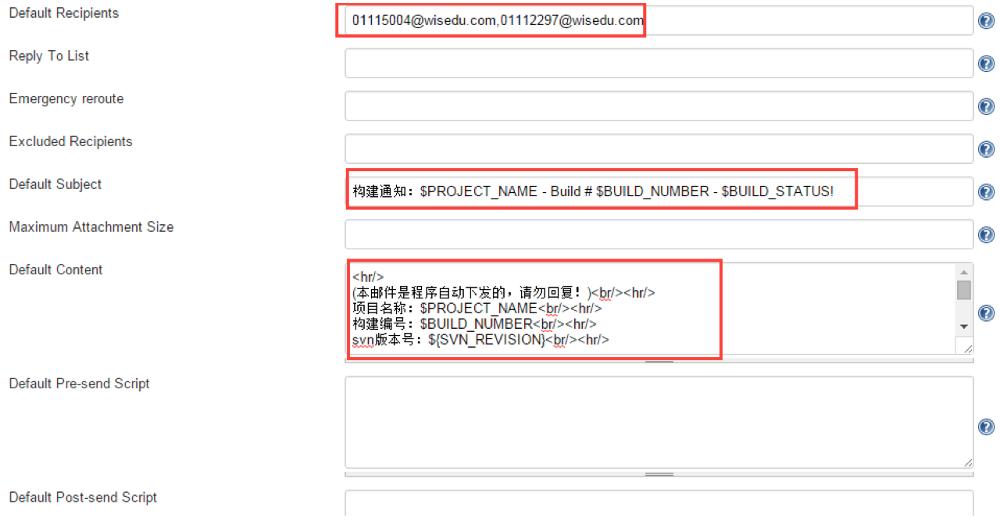
点击下面的保存。
然后去job配置页面激活这个插件。找到需要发邮件的项目，点击进去。
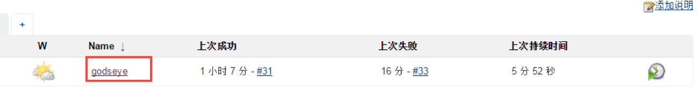
点击配置，点击”增加构建后操作步骤”，选择Editable Email Notification。
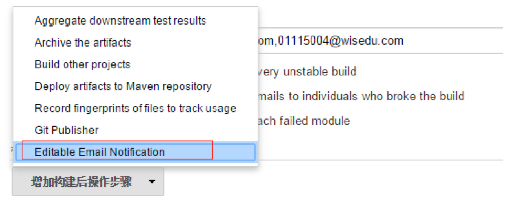
附上构建日志，点击高级设置。

配置Triggers：
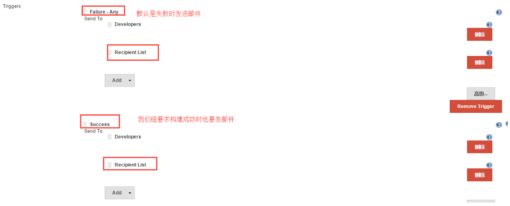
更详细的介绍：http://www.cnblogs.com/zz0412/p/jenkins_jj_01.html
五、Sonar
官方文档：http://docs.sonarqube.org/display/SONARQUBE45/Documentation
1. sonar简介
Sonar是一个用于代码质量管理的开源平台，用于管理Java源代码的质量。通过插件机制，Sonar 可以集成不同的测试工具，代码分析工具，以及持续集成工具，比如pmd-cpd、checkstyle、findbugs、Jenkins。通过不同的插件对这些结果进行再加工处理，通过量化的方式度量代码质量的变化，从而可以方便地对不同规模和种类的工程进行代码质量管理。
与持续集成工具（例如 Hudson/Jenkins 等）不同，Sonar 并不是简单地把不同的代码检查工具结果（例如 FindBugs，PMD 等）直接显示在 Web 页面上，而是通过不同的插件对这些结果进行再加工处理，通过量化的方式度量代码质量的变化，从而可以方便地对不同规模和种类的工程进行代码质量管理。
在对其他工具的支持方面，Sonar 不仅提供了对 IDE 的支持，可以在 Eclipse 和 IntelliJ IDEA 这些工具里联机查看结果；同时 Sonar 还对大量的持续集成工具提供了接口支持，可以很方便地在持续集成中使用 Sonar。
此外，Sonar 的插件还可以对 Java 以外的其他编程语言提供支持，对国际化以及报告文档化也有良好的支持。
2. 环境要求
http://docs.sonarqube.org/display/SONAR/Requirements
3. 新建用户
1 2 3 4 5 | [root@osb30 ~]# groupadd sonar[root@osb30 ~]# useradd -g sonar sonar[root@osb30 ~]# id sonaruid=502(sonar) gid=502(sonar) groups=502(sonar)[root@osb30 ~]# echo "wisedu" | passwd --stdin sonar &> /dev/null |
4. 安装jdk
1 2 3 4 | [sonar@osb30 ~]$ java -versionjava version "1.8.0_65"Java(TM) SE Runtime Environment (build 1.8.0_65-b17)Java HotSpot(TM) 64-Bit Server VM (build 25.65-b01, mixed mode) |
5. 安装配置数据库
1 2 3 4 5 6 | [root@osb30 ~]# mysql -uroot –pmysql> CREATE DATABASE sonar CHARACTER SET utf8 COLLATE utf8_general_ci;mysql> CREATE USER 'sonar' IDENTIFIED BY 'sonar';mysql> GRANT ALL ON sonar.* TO 'sonar'@'%' IDENTIFIED BY 'wisedu';mysql> GRANT ALL ON sonar.* TO 'sonar'@'localhost' IDENTIFIED BY 'wisedu';mysql> FLUSH PRIVILEGES; |
6. 安装sonar
我这里用的版本是SonarQube 4.5.7 (LTS *)，上传该软件到sonar用户的家目录下。
1 2 | [sonar@osb30 ~]$ unzip -oq sonarqube-4.5.7.zip[sonar@osb30 ~]$ vim sonarqube-4.5.7/conf/sonar.properties |
修改如下字段(就是配置数据库信息，其他不用动)：
1 2 3 4 5 6 | sonar.jdbc.username: sonarsonar.jdbc.password: wisedusonar.jdbc.url: jdbc:mysql://localhost:3306/sonar?useUnicode=true&characterEncoding=utf8&rewriteBatchedStatements=true# Optional propertiessonar.jdbc.driverClassName: com.mysql.jdbc.Driver |
7. 启动sonar
Sonar默认集成了jetty容器，可以直接启动提供服务，也可以通过脚本构建为war包，部署在tomcat容器中。
Sonar默认的端口是”9000”、默认的上下文路径是”/”、默认的网络接口是”0.0.0.0”，默认的管理员帐号和密码为:admin/admin，这些参数都可以在配置文件sonar.properties中修改。我这里修改下port，因为本机的9000端口被其他程序占用了。
1 2 3 | [sonar@osb30 ~]$ vim sonarqube-4.5.7/conf/sonar.propertiessonar.web.port=9003[sonar@osb30 ~]$ sonarqube-4.5.7/bin/linux-x86-64/sonar.sh start |
查看日志：
1 | [sonar@osb30 ~]$ tail -f sonarqube-4.5.7/logs/sonar.log |
可以看到第一次启动时，初始化语句：
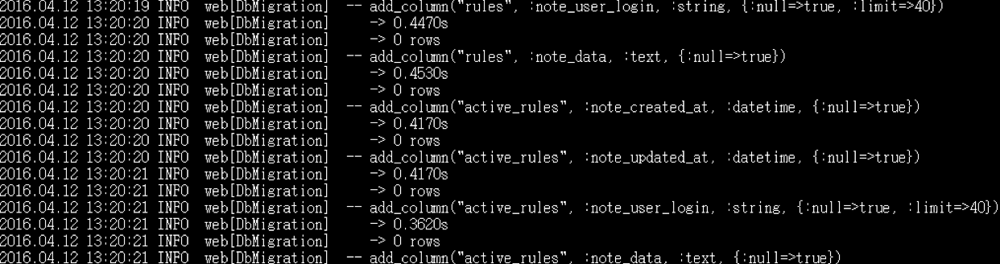
8. 关闭sonar
1 | [sonar@osb30 ~]$ sonarqube-4.5.7/bin/linux-x86-64/sonar.sh stop |
9. 访问sonar
浏览器输入http://172.16.206.30:9003/
默认的管理员帐号和密码为:admin/admin。
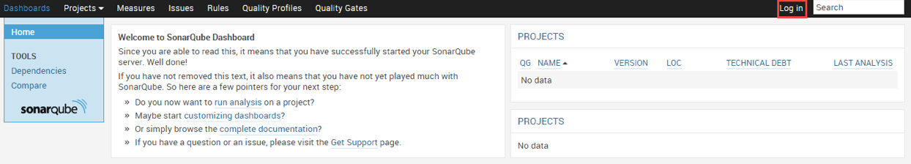
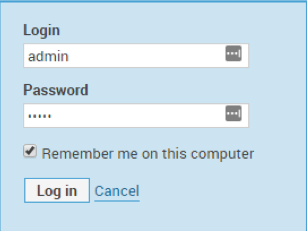
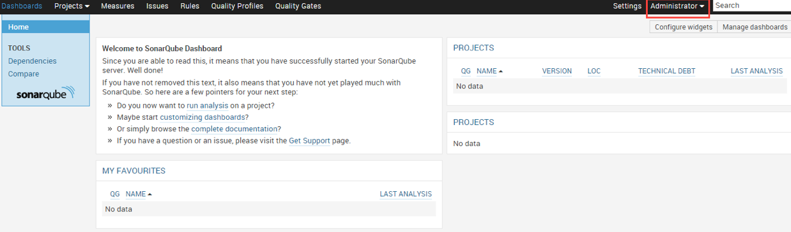
10. sonar插件
Sonar支持多种插件，插件的下载地址为：http://docs.codehaus.org/display/SONAR/Plugin+Library
将下载后的插件上传到${SONAR_HOME}extensions\plugins目录下，重新启动sonar。
sonar默认集成了Java Ecosystem插件，该插件是一组插件的合集:
- Java [sonar-java-plugin]：java源代码解析，计算指标等
- Squid [sonar-squid-java-plugin]：检查违反Sonar定义规则的代码
- Checkstyle [sonar-checkstyle-plugin]：使用CheckStyle检查违反统一代码编写风格的代码
- FindBugs [sonar-findbugs-plugin]：使用FindBugs检查违反规则的缺陷代码
- PMD [sonar-pmd-plugin]：使用pmd检查违反规则的代码
- Surefire [sonar-surefire-plugin]：使用Surefire执行单元测试
- Cobertura [sonar-cobertura-plugin]：使用Cobertura获取代码覆盖率
- JaCoCo [sonar-jacoco-plugin]：使用JaCOCO获取代码覆盖率
11. 与jenkins集成
可以通过maven集成，也可以直接与jenkins集成。我这里选择直接与jenkins集成。
（1）修改maven的主配置文件（${MAVEN_HOME}/conf/settings.xml文件或者 ~/.m2/settings.xml文件），在其中增加访问Sonar数据库及Sonar服务地址，添加如下配置：
1 2 3 4 5 6 7 8 9 10 11 12 13 14 15 16 | <profile><id>sonar</id><properties> <sonar.jdbc.url>jdbc:mysql://localhost:3306/sonar</sonar.jdbc.url> <sonar.jdbc.driver>com.mysql.jdbc.Driver</sonar.jdbc.driver> <sonar.jdbc.username>sonar</sonar.jdbc.username> <sonar.jdbc.password>sonar</sonar.jdbc.password> <sonar.host.url>http://localhost:9003</sonar.host.url> <!-- Sonar服务器访问地址 --></properties></profile><activeProfiles> <activeProfile>sonar</activeProfile></activeProfiles>... |
这部分内容具体可参照网上http://www.cnblogs.com/gao241/p/3190701.html
（2）在jenkins的插件管理中选择安装sonar jenkins plugin，该插件可以使项目每次构建都调用sonar进行代码度量。
a.安装插件

b.系统配置添加sonar的配置
进入系统配置页面对sonar插件进行配置，如下图：
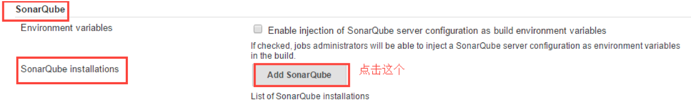
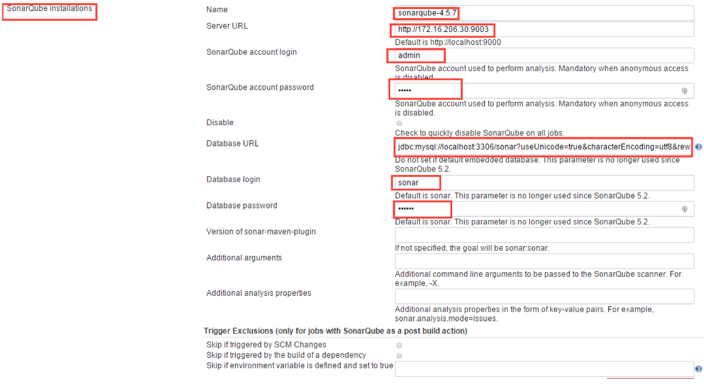
然后点击下面的保存。
c.配置构建项目，增加Post Build Action
点击要构建的项目，在点击左侧的配置。
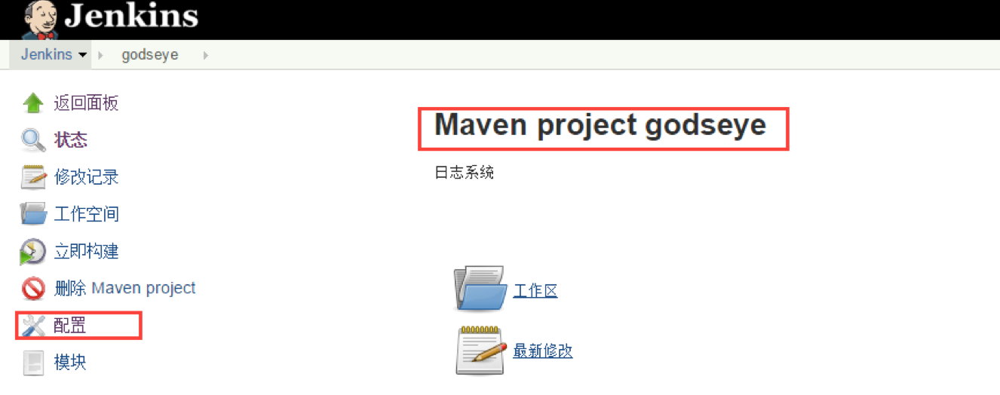
在页面的最下面找到”构建后操作”，选择SonarQube。
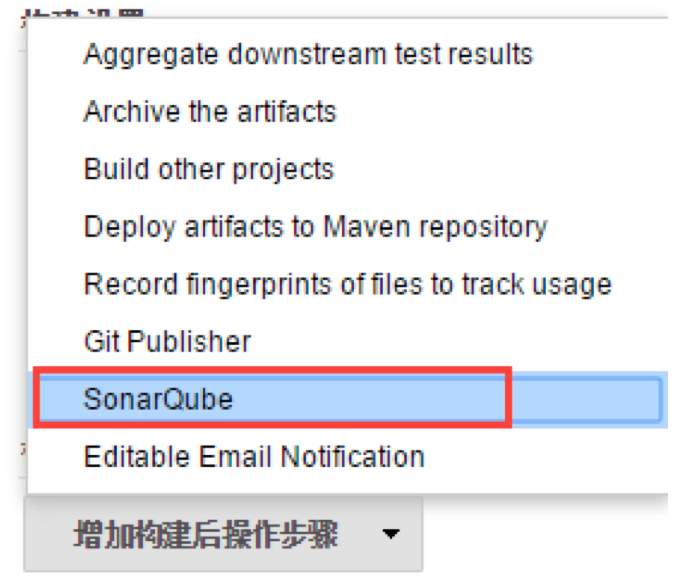
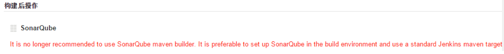
It is no longer recommended to use SonarQube maven builder. It is preferable to set up SonarQube in the build environment and use a standard Jenkins maven target.
【解决】：
http://docs.sonarqube.org/display/SCAN/Analyzing+with+SonarQube+Scanner+for+Jenkins
修改Build处：
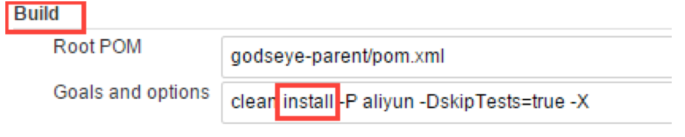
最后去jenkins构建项目，构建完查看sonar控制台：
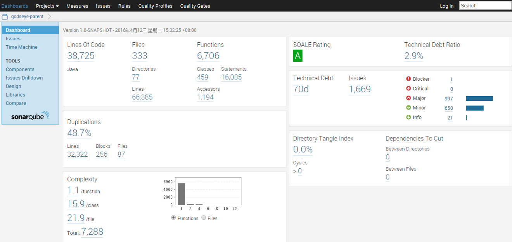
12. 常见问题
Jenkins构建完成后，sonar扫描代码报错：
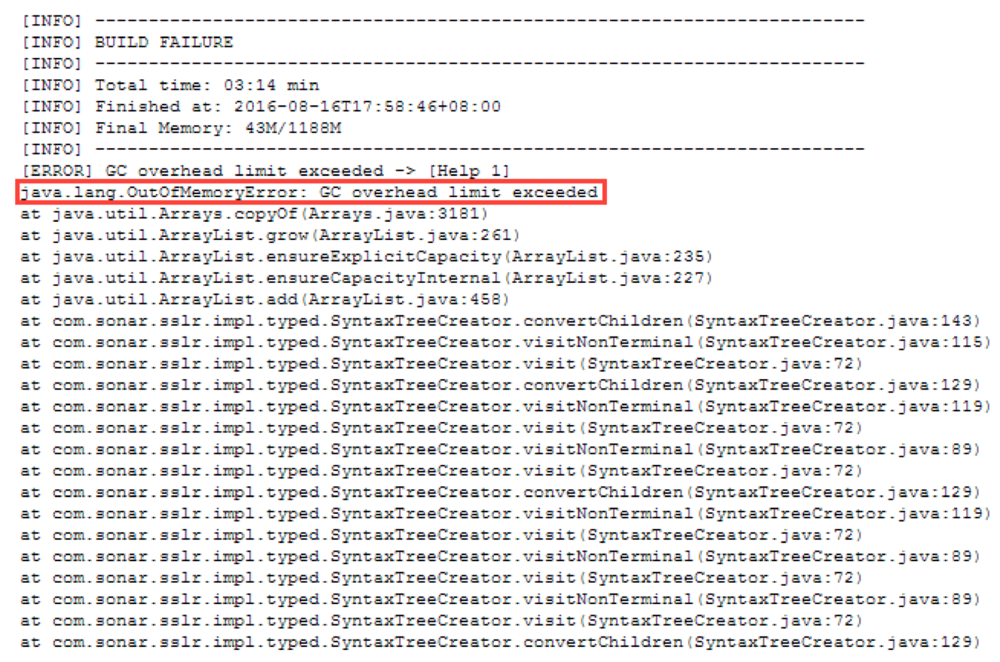
解决： 卸载sonar的JavaScript插件。
六、Jenkins与Docker结合
我这里没有使用Docker Pipeline，直接在构建完成后，执行shell脚本，这样更灵活。
1. 部署流程
- 研发push到svn代码库
- Jenkins 构建，pull svn代码 使用maven进行编译打包
- 打包生成的代码，生成一个新版本的镜像，push到本地docker仓库harbor
- 发布，测试机器 pull 新版本的镜像，并删除原来的容器，重新运行新版本镜像。
2. 环境说明
| 主机名 | 操作系统版本 | IP地址 | 用途 | 安装软件 |
| osb30 | Redhat 6.5 | 172.16.206.30 | svn代码库、Jenkins、Docker | jenkins、svn、Docker 1.7.1 |
| spark32 | CentOS 7.0 | 172.16.206.32 | 本地docker仓库、业务部署测试环境 | harbor、Docker 17.06.1-ce |
3. 配置
由于在Jenkins机器上docker是使用root用户运行的，而Jenkins是使用普通用户jenkins运行的，所以要先配置下jenkins用户可以使用docker命令。
1 2 | [root@osb30 ~]# visudojenkins ALL=(root) NOPASSWD: /usr/bin/docker |
另外在Jenkins机器上配置：
1 2 3 4 5 | # Disable "ssh hostname sudo <cmd>", because it will show the password in clear.# You have to run "ssh -t hostname sudo <cmd>".##Defaults requirettyDefaults:jenkins !requiretty |
如果不配置这个，在执行下面脚本时，会报错误：
1 2 3 | + cp -f /home/jenkins/.jenkins/workspace/godseyeBranchForNov/godseye-container/target/godseye-container-wisedu.war /home/jenkins/docker-file/godseye_war/godseye.war+ sudo docker login -u jkzhao -p Wisedu123 -e 01115004@wisedu.com 172.16.206.32sudo: sorry, you must have a tty to run sudo |
在172.16.206.32机器上配置：
1 2 3 4 | # visudo##Defaults requirettyDefaults:root !requiretty |
否则在机器172.16.206.32机器上执行脚本时会报错：
1 2 3 | [SSH] executing...sudo: sorry, you must have a tty to run sudodocker: invalid reference format. |
4. 安装插件
登录Jenkins，点击“系统管理”，点击“管理插件”，搜索插件“SSH plugin”，进行安装。
登录Jenkins，点击“Credentials”，点击“Add domain”。

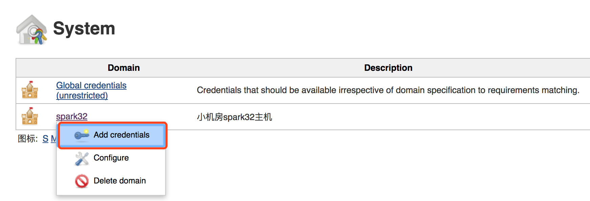
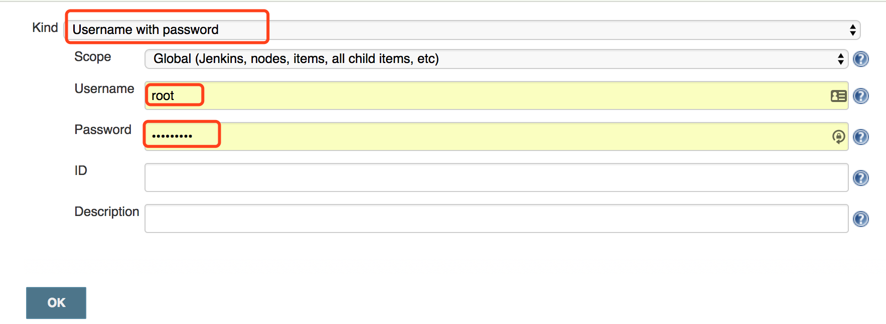
点击“系统管理”，“系统配置”，找到“SSH remote hosts”。
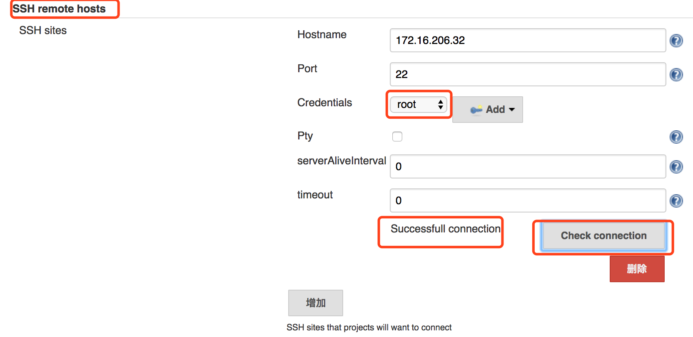
5. 配置Post Steps
项目其他的配置不变，见上面的章节。
【注意】：脚本中用到的仓库和认证的账号需要先在harbor新建好。
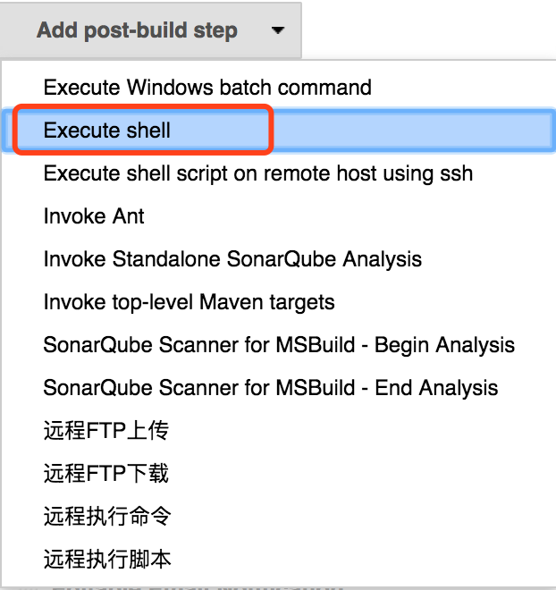
1 2 3 4 5 6 7 8 9 10 11 12 13 14 15 16 17 18 19 20 21 22 23 24 25 26 27 28 | # Jenkins机器：编译完成后，build生成一个新版本的镜像，push到远程docker仓库# VariablesJENKINS_WAR_HOME='/home/jenkins/.jenkins/workspace/godseyeBranchForNov/godseye-container/target'DOCKERFILE_HOME='/home/jenkins/docker-file/godseye_war'HARBOR_IP='172.16.206.32'REPOSITORIES='godseye_war/godseye'HARBOR_USER='jkzhao'HARBOR_USER_PASSWD='Wisedu123'HARBOR_USER_EMAIL='01115004@wisedu.com'# Copy the newest war to docker-file directory.\cp -f ${JENKINS_WAR_HOME}/godseye-container-wisedu.war ${DOCKERFILE_HOME}/godseye.war # Delete image early version.sudo docker login -u ${HARBOR_USER} -p ${HARBOR_USER_PASSWD} -e ${HARBOR_USER_EMAIL} ${HARBOR_IP} IMAGE_ID=`sudo docker images | grep ${REPOSITORIES} | awk '{print $3}'`if [ -n "${IMAGE_ID}" ];then sudo docker rmi ${IMAGE_ID}fi# Build image.cd ${DOCKERFILE_HOME}TAG=`date +%Y%m%d-%H%M%S`sudo docker build -t ${HARBOR_IP}/${REPOSITORIES}:${TAG} . &>/dev/null# Push to the harbor registry.sudo docker push ${HARBOR_IP}/${REPOSITORIES}:${TAG} &>/dev/null |
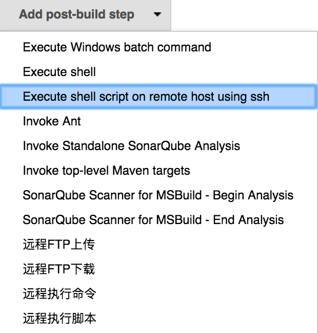
1 2 3 4 5 6 7 8 9 10 11 12 13 14 15 16 17 18 19 20 21 22 23 24 25 26 27 28 29 30 31 32 33 | # 拉取镜像，发布HARBOR_IP='172.16.206.32'REPOSITORIES='godseye_war/godseye'HARBOR_USER='jkzhao'HARBOR_USER_PASSWD='Wisedu123'# 登录harbor#docker login -u ${HARBOR_USER} -p ${HARBOR_USER_PASSWD} ${HARBOR_IP}# Stop container, and delete the container.CONTAINER_ID=`docker ps | grep "godseye_web" | awk '{print $1}'`if [ -n "$CONTAINER_ID" ]; then docker stop $CONTAINER_ID docker rm $CONTAINER_IDelse #如果容器启动时失败了，就需要docker ps -a才能找到那个容器 CONTAINER_ID=`docker ps -a | grep "godseye_web" | awk '{print $1}'` if [ -n "$CONTAINER_ID" ]; then # 如果是第一次在这台机器上拉取运行容器，那么docker ps -a也是找不到这个容器的 docker rm $CONTAINER_ID fifi# Delete godseye_web image early version.IMAGE_ID=`sudo docker images | grep ${REPOSITORIES} | awk '{print $3}'`if [ -n "${IMAGE_ID}" ];then docker rmi ${IMAGE_ID}fi# Pull image.TAG=`curl -s http://${HARBOR_IP}/api/repositories/${REPOSITORIES}/tags | jq '.[-1]' | sed 's/\"//g'` #最后的sed是为了去掉tag前后的双引号docker pull ${HARBOR_IP}/${REPOSITORIES}:${TAG} &>/dev/null# Run.docker run -d --name godseye_web -p 8080:8080 ${HARBOR_IP}/${REPOSITORIES}:${TAG} |